Final Project
3D Printing
In class, we were taught about the benefit of 3D printing and other additive manufacturing methods compared to subtractive techniques, like creating a part with space inside of it or a moving system without the need to manually assemble it. I decided to utilize the latter in my next minor project with a print-in-place gear system.
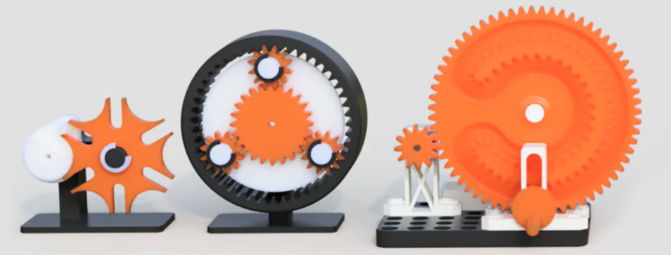
I went with a gear ratio fidget toy for this project, wanting to work with gear ratios and learn how to use them along the way. I heard about an easy way to create gears on OnShape, so I stuck with that software for the time being. I looked up the spur gear custom feature and looked into the calculations behind it.
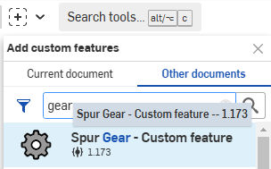
This feature calculates the gear's module by dividing the pitch diameter to the number of teeth, designating a certain amount of the pitch circle to each gear tooth. The pitch circle is the measure of
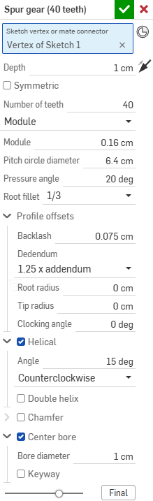
After familiarizing myself with gears, I learned this feature supports helical and herringbone gears on top of spurs and decided to use helical gears for an extra layer of complexity.
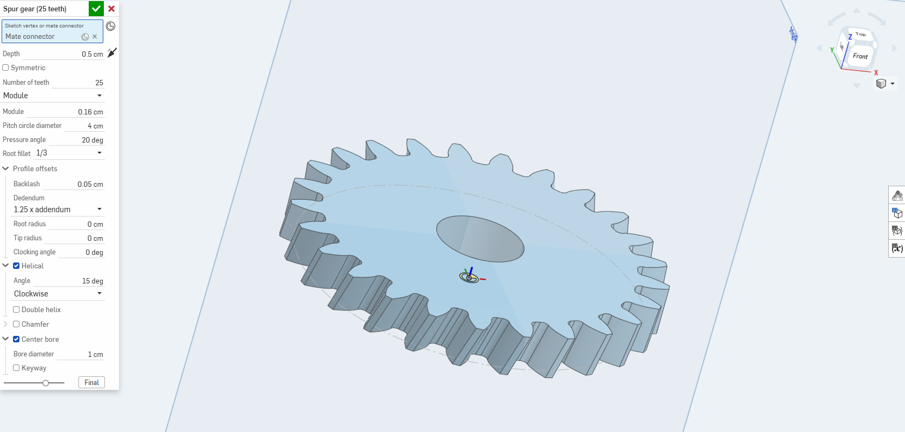
I started by creating two helical gears and setting the distance between them to be the sum of the gears' pitch circle radii. In hindsight, I could have made the two pitch circles coincident, which would have saved a few clicks, but more importantly saved time if I had to resize the gears.
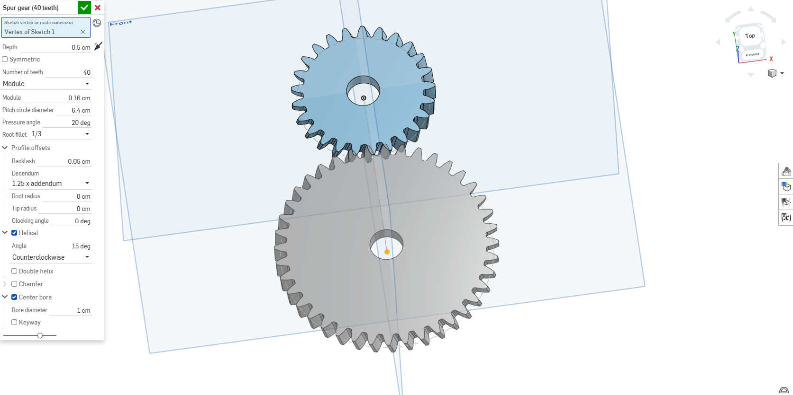
I then created the measurements for the base of the toy; the part meant to be held to spin the gears. I made its axles around 0.5 mm smaller than the gears' center bores to allow it to move and account for the expansion of printed items.
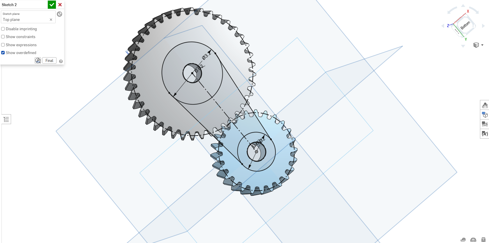
I extruded the gear axes and offset extruded the two faces of the base to let the user hold the gears while turning them, keeping the same 0.5 mm spacing between the gear and the bases.
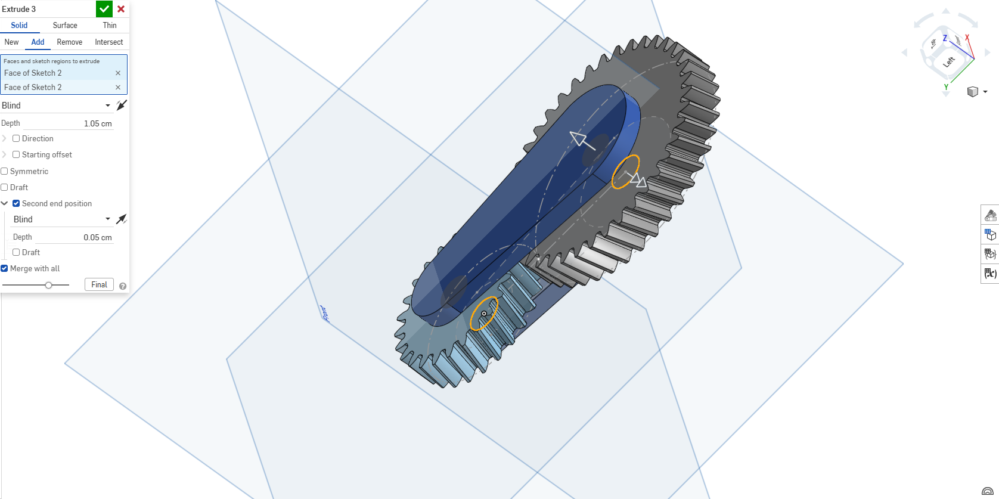
The last thing to do before printing was to angle the gears. However, the formula I looked up for angling gears to fit ended up being wrong.
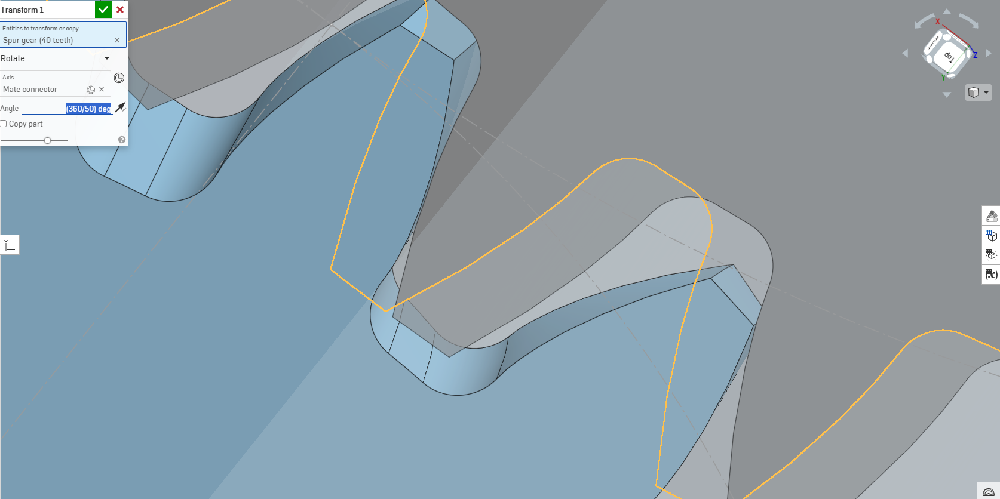
For time's sake, I ended up realigning them myself, which worked out to 3/160 of the 360 degrees the circle has. I wish to look more into the gear angle problem later to see where, if at all, I went wrong.
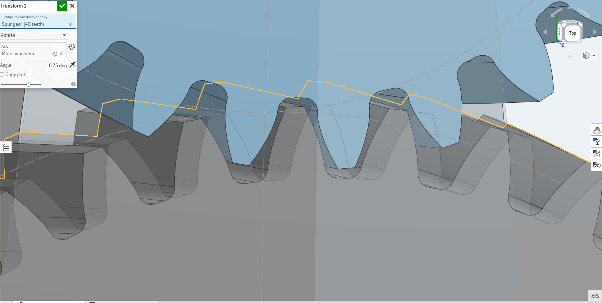
After that, V1 was ready for printing.
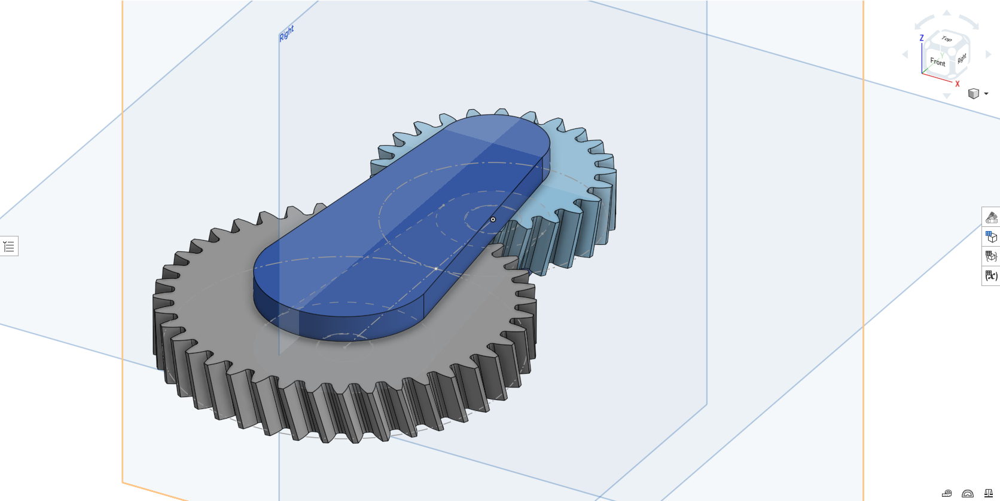
V1 came out of the printer completely immobile, so I knew I messeed up somewhere. After breaking the final product and seeing where it went wrong inside, I saw the gears fused to the axle, the base plates, and each other, so I knew I had to increase the spacing further.
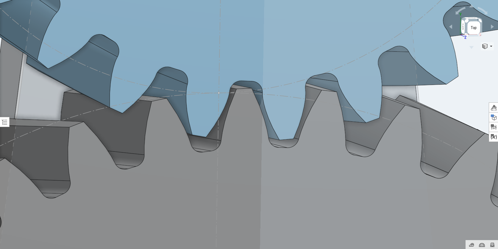
After changing the spacing to 1.5 mm and budging the final product a little, it was able to rotate smoothly without bumps or rubbing, and I was happy with the final result.
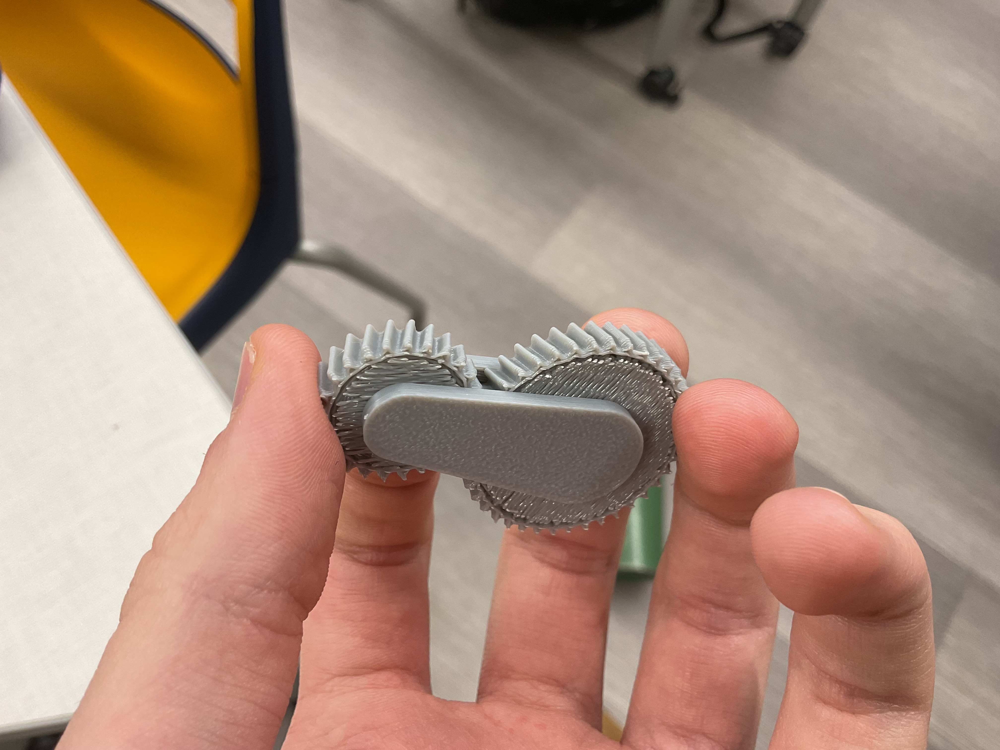
If I were to rework the current design, I would want to make it easier to print in place by adding an angle to the gears and slightly increasing the center bore diameter to stop the supports from interfering with its rotation. In future designs, I also want to allow the user to use it like a fidget toy, with their fingers controlling the rotation of the gears by making the rotation axis stuck to the gears themselves and not the frame. Although it was simple, this was one of my favorite projects so far. To continue working with print-in-place motion designs, I would like to work on modeling and printing a rotary engine from scratch.

3D Scanning
For the second part of this mini-project, we were tasked with learning how to 3D-scan objects. I used the Scaniverse app on my phone to complete this project, which uses infrared light through LiDAR (Light Detection And Ranging) to determine the distance to a specific object. I used Scaniverse not only for its mobile convenience, but also because it keeps the original color of the objects, making any final print more aesthetically pleasing.
As you revolve around the object, the app picks up more distances and generates a 3D model that fits the points you scanned.
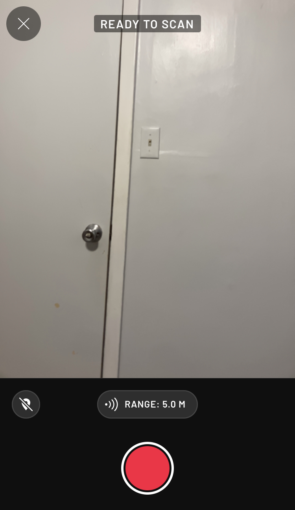
I decided at first to scan my school water bottle. After taking about four minutes to generate the model by revolving around the object, the model came out hollow, with a large gap in the middle of the water bottle.
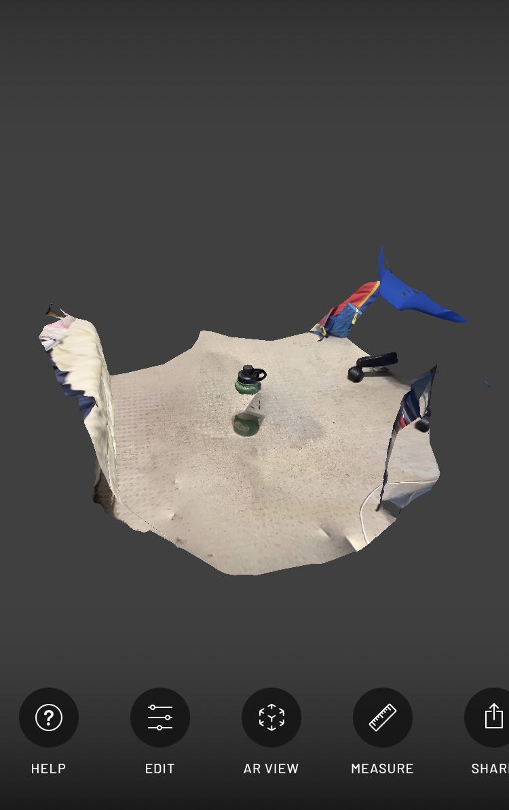
The bottle was most likely hollow because of its bumpy, dimpled surface and the metal's tendency to reflect light, which may cause the LiDAR to get messed up while generating the model. Although the bottle didn't survive the process, the background looked extremely accurate, leaving some hope for future tests.
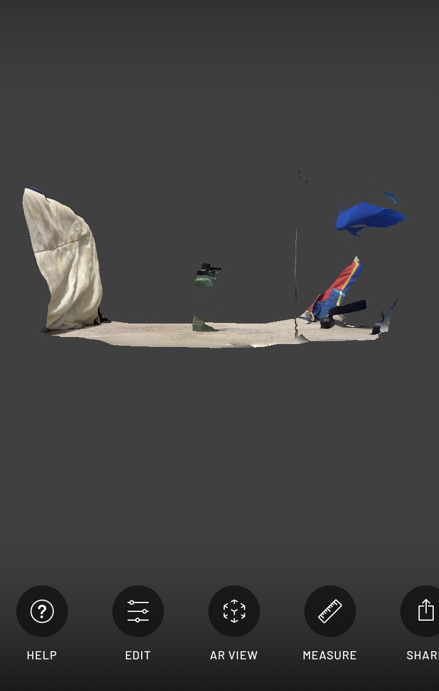
Next, I decided to scan something else to have a complete 3D model of something familiar to me, for which I chose to scan my brother's drum set. On this scan, there were also a few holes at the center of the drums, which draws some questions as to the accuracy of the app, but just may be another special case like the bottle.
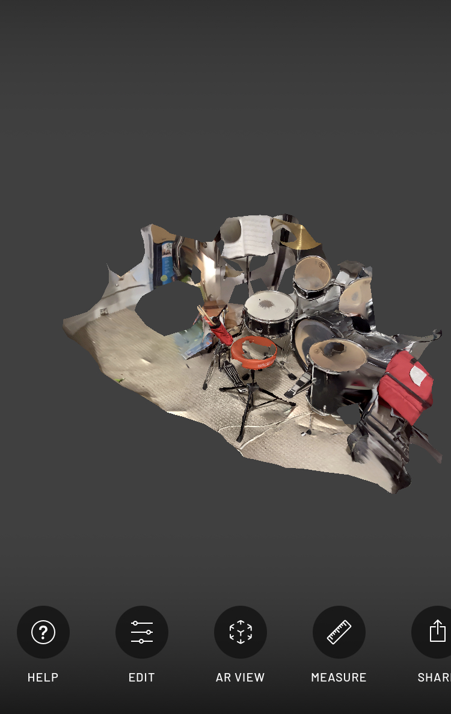
However, the scan of the snare drum came out much better than expected. This part of the model at least is fully printable and applicable in other use cases.
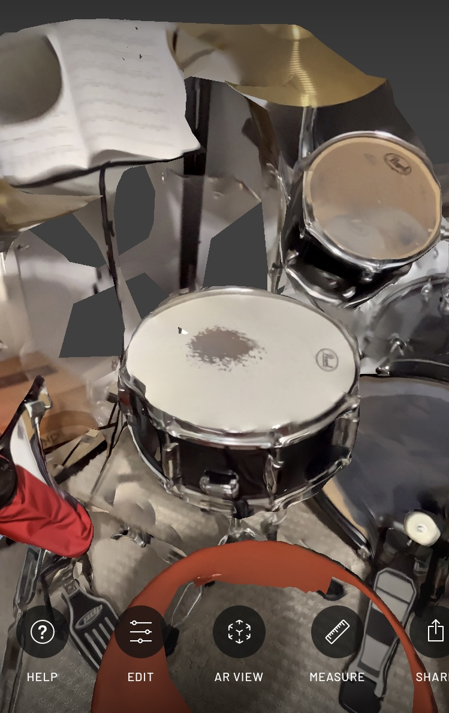